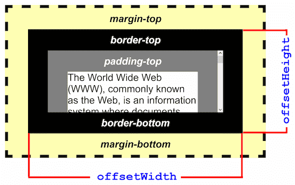

The HTMLElement.offsetWidth read-only property returns
the layout width of an element as an integer.
Typically, offsetWidth is a measurement in pixels of the element's CSS
width, including any borders, padding, and vertical scrollbars (if rendered). It does
not include the width of pseudo-elements such as ::before or
::after.
If the element is hidden (for example, by setting style.display on the
element or one of its ancestors to "none"), then 0 is
returned.
var intElemOffsetWidth = element.offsetWidth;
intElemOffsetWidth is a variable storing an integer corresponding to the
offsetWidth pixel value of the element. The offsetWidth
property is a read-only.
This property will round the value to an integer. If you need a fractional value, use {{ domxref("element.getBoundingClientRect()") }}.

| Specification | Status | Comment |
|---|---|---|
| {{SpecName('CSSOM View', '#dom-htmlelement-offsetwidth', 'offsetWidth')}} | {{Spec2('CSSOM View')}} |
offsetWidth is a property of the DHTML object model which was first
introduced by MSIE. It is sometimes referred to as an element's physical/graphical
dimensions, or an element's border-box width.
{{Compat("api.HTMLElement.offsetWidth")}}